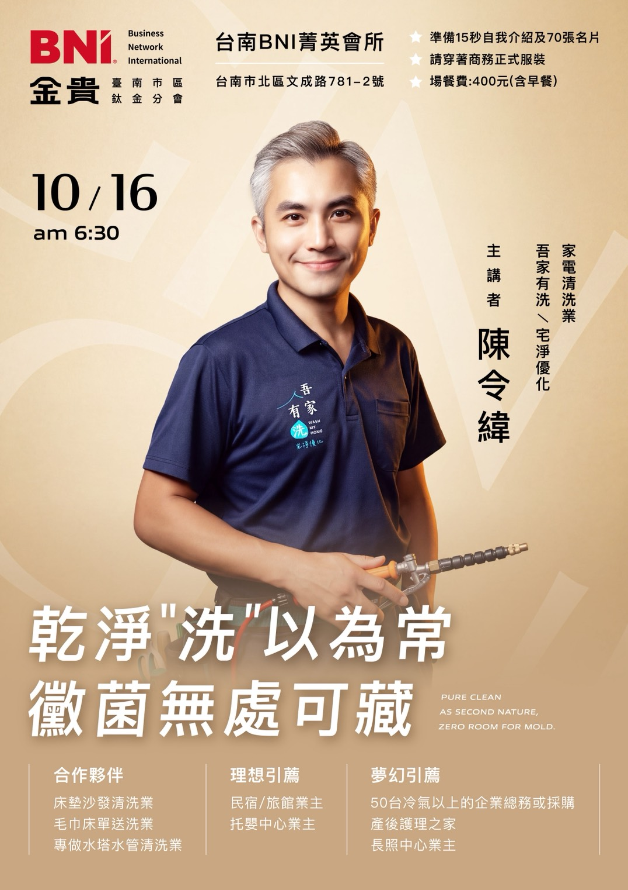

CORE VALUES
全球 BNI 共同的核心價值
付出者收穫Givers Gain®
建立關係Building Relationships
終身學習Lifelong Learning
傳統與創新Traditions + Innovation
正面積極的態度Positive Attitude
當責Accountability
認可與表揚Recognition

講者：陳令緯・家電清洗業（吾家有洗／宅淨優化）
本週招募引薦：床墊沙發清洗業／毛巾床單送洗業／專做水塔水管清洗業；民宿或旅館業主／托嬰中心業主；50 台冷氣以上的企業總務或採購／產後護理之家／長照中心業主。
預約下次例會BNI 的核心精神是「付出者收穫」——用結構化的每週例會，讓陌生的商務關係變成長期互信的轉介來源。
每個行業類別在同一分會僅開放一位代表，降低同業競爭，讓你成為該領域被優先想起的人。
固定時間、固定流程，讓每位成員都有機會清楚介紹自己的專業與需求，累積被記住的機會。
每一次轉介與成交金額都會被記錄追蹤（TYFCB），讓信任關係build 在真實的成果之上，而不只是人情。
不急著叫你報名。早起、規矩、拉人、成效與「這是不是直銷」都可以先問清楚，再決定要不要來現場看看。
第一次來訪建議提早 10 分鐘抵達，會有接待夥伴帶你熟悉現場、說明流程。